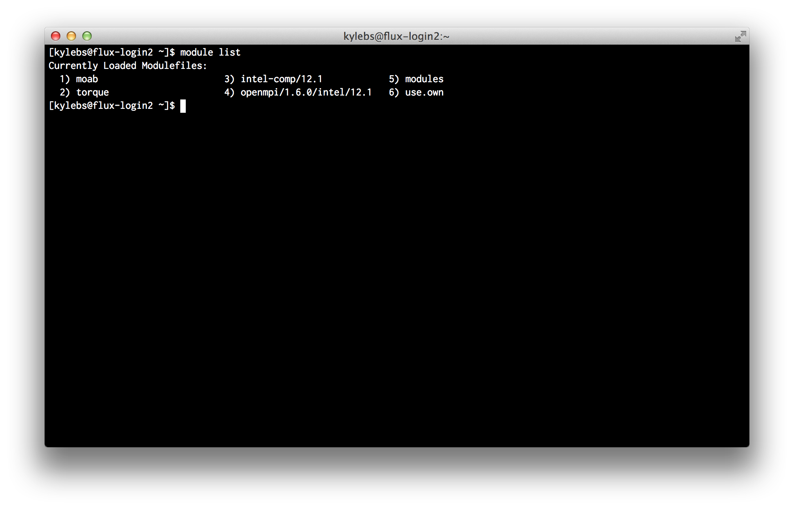
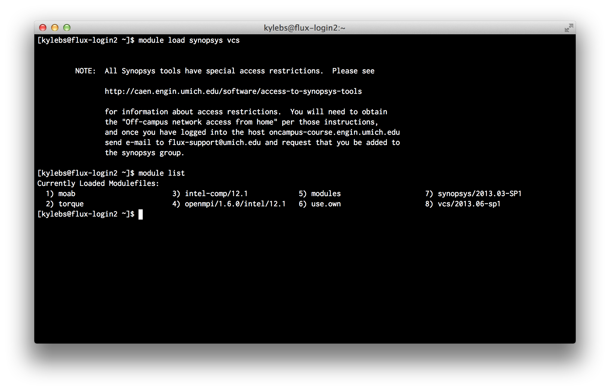
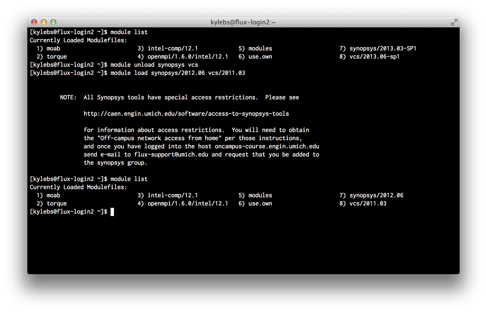

- About the author
- Questions and Issues
- Edit and Contribute
- Introduction
- 1. Overview
- 2. Getting Access
- 3. Running Jobs (_synthesis_)
- 4. TL;DR
- 5. Practical Examples (_and l33t h4x_)
- 6. Appendices
Writing Job Scripts
Now that you can access the login nodes, it's time to start writing job
scripts. Job scripts are what you submit to the job scheduler to be put in the
worker queue. On Flux, we use
Portable Batch System (PBS)
(covered in more detail next chapter). For EECS 470, our job scripts will be
simple shell scripts that copy files and invoke
make.
Quick Disclaimer
This isn't supposed to be a guide on shell scripting. If
you already have a good handle on command-line tools like make, understanding
job scripts should be cake; however, if you don't feel comfortable with the
Black Screen of Wonder™, you should copy-paste the example code provided later
on, OR find a friend and work through it. I won't spend time explaining
standard commands or scripting practices. If you want to strengthen your
BASH-fu, you might consider spending some time reverse-engineering posts on
commandlinefu.com.
Hello World
No guide would be complete without a "Hello World" example, so here's ours.
Consider the below shell script, titled hello-world-job.sh:
#!/bin/bash
#PBS -A brehob_flux
#PBS -l qos=flux
#PBS -q flux
echo "Hello World!"
As you can see, short of those 3 weird #PBS comment lines, this is just your
regular old, run-of-the-mill bash script. We'll cover how to submit this job
in the next section. For now, assume that running this job produces 2 new
text files in the working directory: hello-world-job.sh.o12253000 and
hello-world-job.sh.e12253000. These files contain outpuf from STDOUT and
STDERR, respectively. More on these files in just a minute.
Job Attributes
Let's turn your attention back to those 3 weird lines that start with #PBS.
These are obviously comments of some sort (the line does starts with a #),
but what are they and why do we need them for our simple "Hello World" job?
These comments are special directives to the job scheduler that specify
job attributes.
There are many attributes that you can set and a full list is available on the
CAC PBS reference page.
While many attributes are optional, all jobs must specify Queue, Account, and Quality of Service (QOS). Queue and QOS should stick to the default values listed below while Account should use the allocation name you were given via email.
- Queue
-q flux - Account
-A {your allocation name here} - Quality of Service (QOS)
-l qos=flux
Log Files
You seem like a smart person; I'm guessing you've figured out that it's no
coincidence they're named {job-script}.{'o' or 'e'}{numbers}. The
default behavior of PBS is to dump two files into the directory that the job
was submitted from . The {numbers} portion of the filename is the Job
ID which is established by PBS for tracking purposes and returned to the user
upon successful submission. The {'o' or 'e'} portion indicates that these
files contain the "output" and "error" logs, respectively. Remember how we said
PBS runs "unattended programs?" Since we can't (generally speaking) watch
STDOUT and STDERR while a job is running, PBS pipes everything from
STDOUT into the {'o'} log and everything from STDERR into the {'e'}
log. This way, we can review what the program printed to the terminal while we
weren't watching.
Environment Modules
Flux is an incredibly complex system and must support the needs of many users. Due to the nature of High Performance Computing, the HPC Group has to be extremely careful with software versioning; many jobs will run for weeks, months, and even years.
In order to better-accommodate the wide range of users and software requirements (versions), Flux makes use of environment modules to dynamically load and unload common software packages.
As a user of Flux, you need to be aware of this because, as you'll soon find, just because a software package is installed (available), does NOT mean it's accessible for use (loaded). Synopsys is an example of one package that is available but NOT loaded by default.
More command line tools will be covered in the next section; however, since you
need to understand module to work through the next example job, lets quickly
describe it here. We'll be looking at the 4 most-common commands: list,
available, load, and unload.
list: List packages that are currently loaded into the environment:$ module list
available: List packages that are installed but not currently loaded:$ module available
load: Load an available package into the current environment. For example, to load the default version of synopsys and vcs:$ module load synopsys vcs
As you can see,
2013.03-SP1and2013.06-sp1are the default versions of Synopsys and VCS, respectively.unload: Remove a loaded package from the current environment. For example, to unload the current versions of synopsys and vcs:$ module unload synopsys vcsAnd to specifically load in older versions by tag:
$ module load synopsys/2012.06 vcs/2011.03
As you can see, we unload
2013.03-SP1and2013.06-sp1and load in legacy versions2012.06and2011.03.
Job Restrictions & Limitations
At this point, it's probably a good idea to describe some of the restrictions and limitations on jobs. As you tweak and develop job scripts for your projects, keep the following in mind.
No internet access inside jobs. While you can access the interwebs from the login nodes, jobs are sandboxed. For the record, I can't find any reference that confirms this fact, but I certainly witnessed and experienced it.
If you simply need to grab something from the interwebs before the job runs (eg: clone a repository, grab the latest copy of some external file), you can wrab the actual job script with a job "submission" script that will perform these tasks before the job enters the queue.
No automatic AFS access. Meaning, by default, the Flux login nodes do not generate AFS tokens for you. If you need to access AFS space, you'll need to obtain the appropriate AFS tokens manually:
# list current tokens $ tokens # if "--End of list--" is displayed with no tokens, then you need to generate a token $ aklog -c umich.edu # now, unless something went wrong, you should have a token $ tokensFair warning that this may require you to enter your password, which means you should definitely keep this out of job scripts. Entering passwords into scripts == sketchy.
If you need something from AFS space for a job, obtain a token at the login shell and wrap the job script a job "submission" script (same as #1 above).
Accessing AFS and network space is super slow and could easily become a bottleneck in your batch jobs. Fortunately, HPC provides us with some "scratch storage" space. 640TB of high-speed scratch storage space to be exact. Therefore, it's a good idea (and best practice) to copy any files needed by your job to your scratch space before the job executes (eg: using a job "submission" script again).
Every authorized user on a project is granted scratch space in
/scratch/{account}/{user}. For example, my scratch space in Dr. Brehob's trial allocation is located in/scratch/brehob_flux/kylebs.
Simple 2-Script Synthesis Job
Now that we've covered the fundamentals, let's consider a basic synthesis job that uses 2 different scripts (a very common structure):
- 1 for pre-submission file operations
- 1 for the actual job
NOTE: If run as-is, this job will fail! Keep reading to find out why
Here's the pre-submission script, pre-sub.sh:
#!/bin/bash
export JOB_SCRIPT=job-script.sh
export PROJ_DIR=`pwd`
export SCRATCH_SPACE="/scratch/brehob_flux/$USER"
# Need to load synopsys and vcs modules
module load synopsys/2013.03-SP1
module load vcs/2013.06-sp1
echo "Submitting job..."
JOB_ID=`qsub $JOB_SCRIPT`
if [ "$?" -ne '0' ]; then
echo "Error: Could not submit job via qsub"
exit 1
fi
unset JOB_SCRIPT
unset PROJ_DIR
unset SCRATCH_SPACE
echo "JobID: $JOB_ID"
Here's the actual job script, job-script.sh:
#!/bin/bash
#PBS -S /bin/sh
#PBS -N eecs470synth
#PBS -A brehob_flux
#PBS -q flux
#PBS -l qos=flux,nodes=1:ppn=12,mem=47gb,pmem=4000mb,walltime=05:00:00
#PBS -V
# copy the project dir to the scratch space
temp_dir="$SCRATCH_SPACE/$PBS_JOBID"
mkdir -p "$temp_dir"
cd "$temp_dir"
cp -R "$PROJ_DIR" .
make syn
In a nutshell, to launch a new job, you'd move both scripts into the
root of your project directory and start the pre-sub.sh by running the
following command from the login shell:
$ ./pre-sub.sh
A few things would then happen:
$PROJ_DIRwould be set to the current working directory (the one where you Makefile lives)$SCRATCH_SPACEwould be set to the absolute path to your scratch space. In this example, my allocation is namedbrehob_flux- Synopsys and VCS are loaded into the environment (specific versions are targeted)
- A mysterious new command,
qsub, is issued and the job is submitted. If the return code ($?) is anything besides0, then the job submission failed and we print an error message and exit.
Assuming the job was submitted and queded up successfully, then, sometime
later, a worker node would start job-script.sh and a few more things would
happen:
- A few new job parameters are used, notably:
-V, which tells the scheduler to propagate the current enviornment (the one that submitted the job to begin with) into this one. This is extremely important because it will make the exported environment variables (ie:$PROJ_DIRand$SCRATCH_SPACE) available to the job, and will ensure that previously loaded modules (ie: Synopsys and VCS) are also available.-l nodes=1:ppn=12,mem47gb,pmem=4000mb,walltime=05:00:00, which sets up the node architecture. Bennet Fauber did an excellent job at describing how these values affect the job performance; you can read an excerpt from his email in the appendix. Unless you've been gifted with a high memory allocation, stick to these defaults; they're tried and true.
- A new directory is created in your scratch space with a name equal to the job's ID.
- The project directory that the job was submitted from is copied to scratch space.
- Synthesis is started by invoking
make syn.
Now for the bad news: unfortunately, while this looks good and seems correct,
there are hidden dependencies in the synthesis files for Better Build System
that will cause synthesis to fail. Specifically, scripts/default.tcl contains
the following line of code:
set search_path "/afs/umich.edu/class/eecs470/lib/synopsys/"
Essentially, EECS 470 uses custom libraries that must be loaded in at synthesis time. Since the files are on AFS, the load will fail because, as we know, there isn't a valid AFS token in the job enviornment.
Fortunately, there's an easy (but dirty) solution: copy all the included files
to the scratch space before the job executes, and use sed or another tool
to replace all instances of the old path with the new one. For now, just be
aware of this issue; we'll give some example code to take care of this in the
final chapter, "Practical Examples".